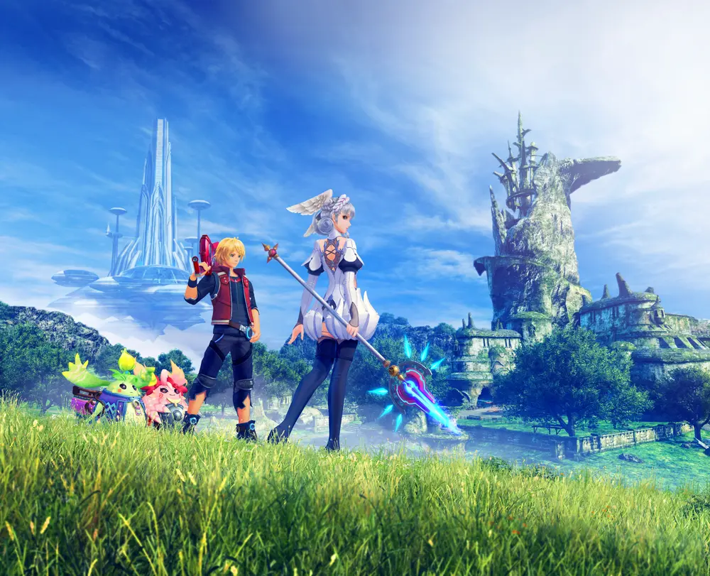
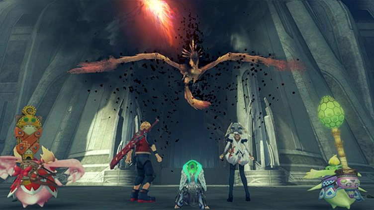
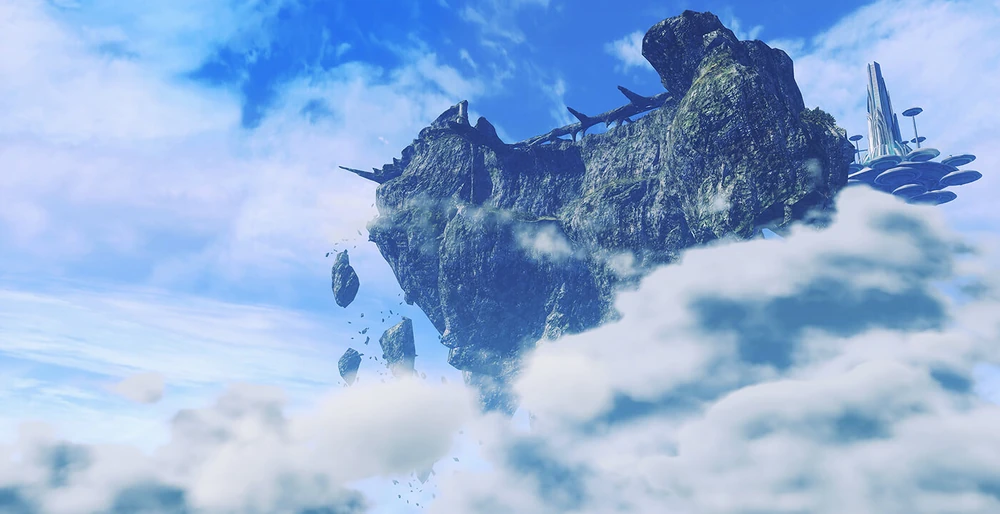

Characters
Overview
A tale expansion of Xenoblade Chronicles: Definitive Edition, Xenoblade Chronicles: Future Connected (Japanese: つながる㜪㝥, Tsunagaru mirai) is an additional epilogue. The main characters are Melia, Shulk, and two new Nopon—Kono and Nene—all of whom are playable in the newly added Bionis' Shoulder region. Although it won't make sense if you don't already know the Xenoblade Chronicles plot, you can play this extra story without first finishing the main plot.
Story
Media


